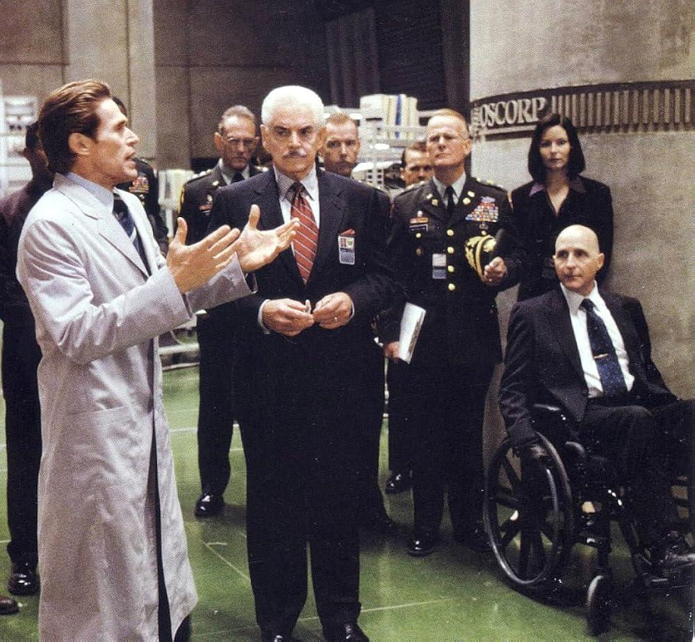
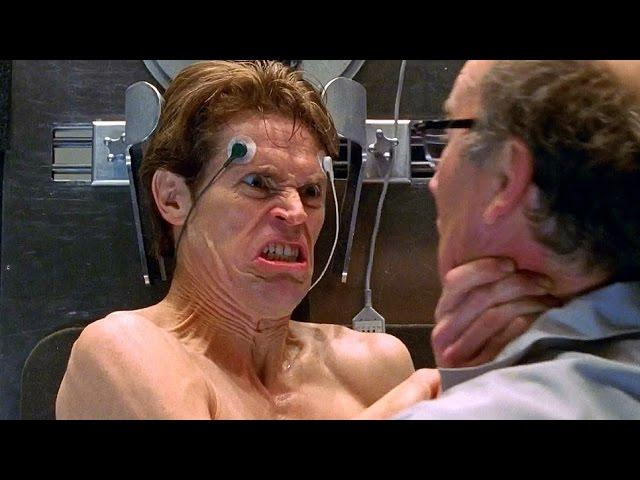
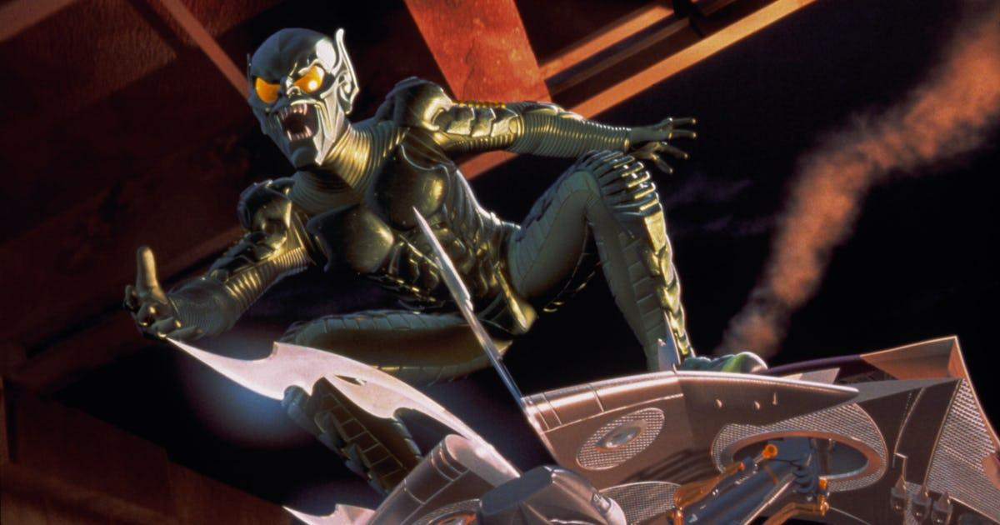
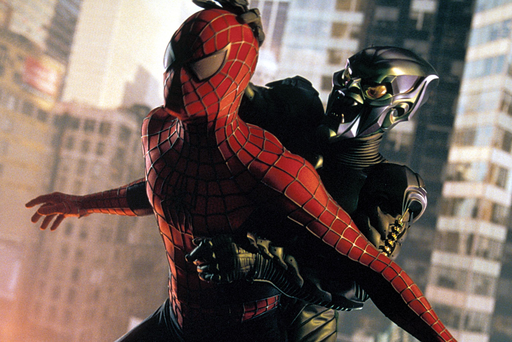

DUENDE VERDE
Norman Osborn transformou inteligência, poder e loucura em uma das maiores ameaças que o Homem-Aranha já enfrentou.

Norman Osborn
Oscorp
Homem-Aranha
Extremo
Norman Osborn
Por trás da máscara do Duende Verde está Norman Osborn, empresário brilhante, cientista e fundador da Oscorp.
Sua obsessão por poder e aperfeiçoamento científico o levou a experimentar uma fórmula capaz de aumentar suas capacidades físicas e intelectuais.
O resultado também afetou sua mente, criando uma personalidade violenta, instável e obcecada pelo Homem-Aranha.

Norman Osborn
Fundador da Oscorp e responsável pelos experimentos que acabariam dando origem ao Duende Verde.

A empresa por trás do monstro
A Oscorp representa o lado brilhante e tecnológico de Norman Osborn. Por trás de seus laboratórios, porém, estavam experimentos capazes de mudar completamente o futuro de seu criador.
A fórmula experimental aumentou sua força, reflexos, inteligência e resistência, mas também provocou graves alterações em sua personalidade.
Arsenal do Duende
Tecnologia avançada transformada em armas letais.

Planador Goblin
O planador é uma das marcas registradas do Duende Verde. Além de permitir ataques aéreos em alta velocidade, também pode ser utilizado diretamente como arma.
Planador
Mobilidade aérea e ataques em alta velocidade.
Bombas-Abóbora
Explosivos característicos capazes de causar enorme destruição.
Inteligência
Norman é cientista, inventor e estrategista brilhante.
Força
A fórmula Goblin aumentou força, agilidade e resistência.
A transformação
Norman Osborn
Empresário e cientista responsável pela Oscorp.
Experimento
A fórmula experimental aumenta suas capacidades físicas.
Duende Verde
Uma personalidade cada vez mais violenta assume o controle.
Homem-Aranha
Peter Parker se torna sua maior obsessão.
Duende Verde VS Homem-Aranha
A rivalidade entre os dois vai muito além de simples batalhas. Norman descobriu a identidade secreta de Peter Parker e passou a atacar diretamente sua vida pessoal.
Poucos inimigos conseguiram atingir Peter de forma tão pessoal e causar consequências tão marcantes.

O Legado
Norman Osborn não é apenas mais um inimigo do Homem-Aranha. O Duende Verde se tornou parte fundamental da história de Peter Parker e um dos maiores vilões da Marvel.
“Nós vamos nos encontrar novamente, Homem-Aranha.”